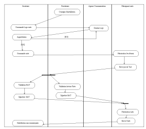

Rédaction des documents d’analyse avec U.M.L
Date de publication : 12/04/2006
4. Organisation du projet
4.1. Préambule
4.2. Grant du projet
4.3. Description des tâches du projet
4.4. Tâche : Commande des cartes
4.5. Epilogue
4. Organisation du projet
4.1. Préambule
Votre réponse technique et commerciale a donné entière satisfaction et vous voilà C.P. du projet “Carte de fidélité”. Votre premier souci est d’organiser le projet ...
4.2. Grant du projet
Il semble que pour tenir les délais, il faille mener plusieurs opérations en parallèle :
- Le relation avec le constructeur pour qu’il puisse démarrer rapidement les développements
- L’organisation de la part du groupement de la mise en place de la fidélité (Logo des cartes, relation avec la banque, relation avec les mainteneurs, ...)
- La mise en place de l’architecture interne (achat machine, installation, ...)
- La spécification des besoins.
Dans le cas de délai court de mise en place un diagramme de Grant peut être très utile. Pour conserver une notation U.M.L., un diagramme d’activité est tout indiqué ...
4.3. Description des tâches du projet
Vous prenez ensuite votre plume pour spécifier le rôle de chacun ...
| Libellé |
Commentaire |
Date |
| Spécification générale |
Elles doivent comprendre :
- De manière détaillée les spécifications d’échange avec l’opérateur de TPE
- Définir de manière exhaustive (1) l’ensemble des tâches à réaliser
|
|
| Spécification détaillée WEB |
Description des écrans Web, diagramme de navigation, ... |
|
| .... |
|
|
| Commande des cartes |
... |
|
| .... |
|
|
Certaines tâches ne sont pas précisément décrites dans le graphe précédant. Elles nécessitent d’être détaillées.
4.4. Tâche : Commande des cartes
Grant : Commande des cartes
Nous vous laissons le soin de décrire chacune des étapes ...
4.5. Epilogue
Les autres tâches du road map sont à reprendre suivant le même principe.
Maintenant que vous avez lister les tâches et les contraintes, il vous reste à construire le planning en fonction de l’organsiation de votre équipe.
Bonne chance ...
Ce document est soumis à la licence GNU FDL traduit en français ici.
Permission vous est donnée de distribuer, modifier des copies de cette page tant que cette note apparaît clairement.
|


{kind=link}
{kind=link}